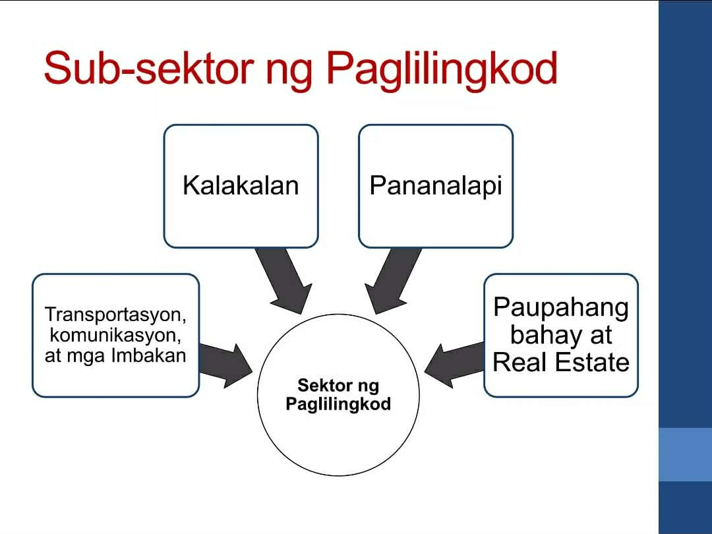
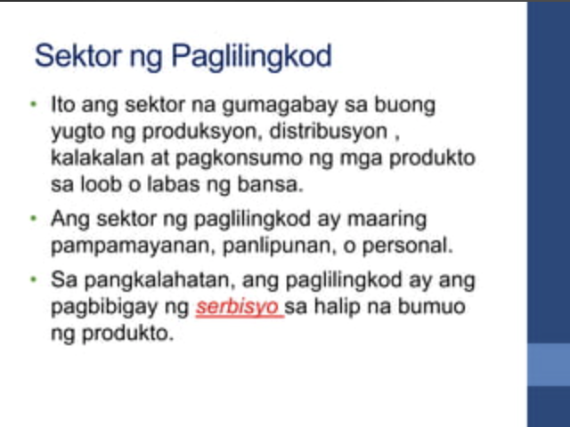

💼 Sektor ng Paglilingkod
Aralin 4 - Quarter 4
Ano ang Sektor ng Paglilingkod?
Tumutukoy sa pagbibigay ng serbisyo sa tao at negosyo. Kabilang dito ang edukasyon, kalusugan, turismo, transportasyon, at mga serbisyo ng gobyerno.
Mga Halimbawa ng Paglilingkod
- Edukasyon – paaralan, unibersidad, training centers
- Kalusugan – ospital, klinika, mga health center
- Transportasyon – bus, tren, airlines, shipping
- Turismo – hotel, tour guides, resorts
- Serbisyong Gobyerno – police, fire dept., social services
Kahalagahan ng Sektor ng Paglilingkod
- Nagbibigay trabaho sa milyun-milyong Pilipino
- Nag-aambag sa GDP at ekonomiya
- Nagtutulak sa kaunlaran ng komunidad
- Pinapadali ang buhay ng tao at negosyo
Suliranin sa Sektor ng Paglilingkod
- Kakulangan sa skilled labor
- Mahinang imprastraktura
- Mataas na presyo ng serbisyo
- Kakulangan sa access sa ilang serbisyo
Sangay ng Pamahalaan na Tinutulungan ang Paglilingkod
- Department of Education (DepEd)
- Department of Health (DOH)
- Department of Transportation (DOTr)
- Department of Tourism (DOT)
- Department of Social Welfare and Development (DSWD)

